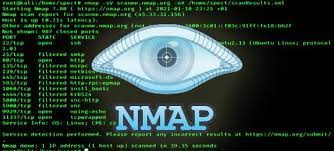
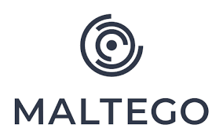
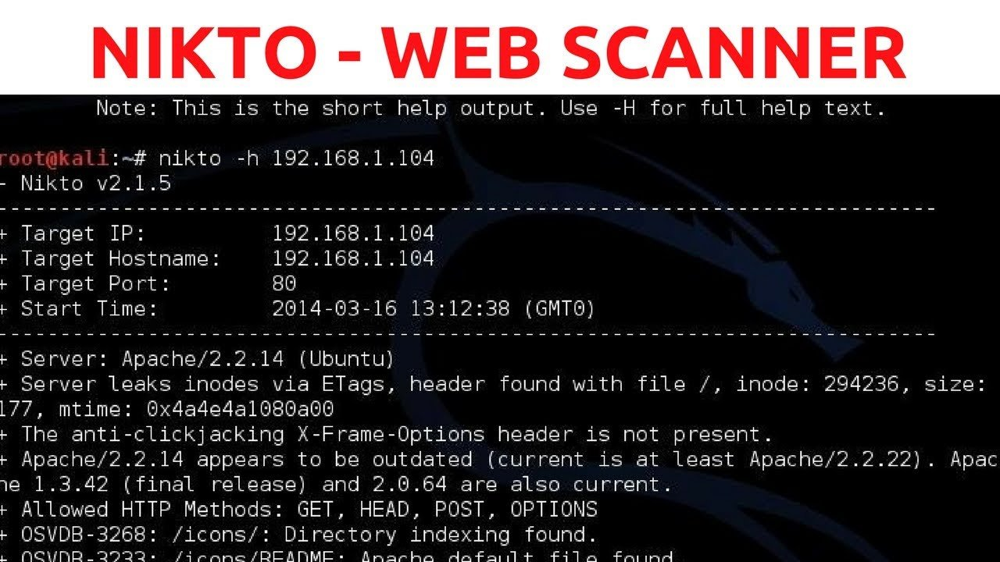

5 FERRAMENTA HACKER

os ataque hacker vem crescendo a cada dia os grande ataque vem das ferramentas de teste vulnerabilidade,scan,varedura, nesse post voce vai conhecer as principais ferramenta de ataque hacker
o tema que sera abordado são:
- NMAP
- METASPLOIT
- SQLMAP
- MALTEGO
- NIKTO
- NMAP A mais conhecida e usada, é claro o Nmap (Network Mapper), que é 100% gratuito. Nmap é usado principalmente para a descoberta de rede e auditoria de segurança. Literalmente, milhares de sistemas de administradores em todo o mundo usam o nmap para inventário de rede, verificando se há portas abertas, gerenciando agendas de atualização de serviços e monitorando host ou uptime. Nmap, como uma ferramenta usa pacotes IP packets de forma criativa para determinar o que está disponível na rede. O Nmap é um programa que permite fazer um scan completo em uma rede, para se obter as informações de quais hosts estão nela ativos. Além disso, ele também permite fazer scan de porta, a fim de descobrir quais portas estão abertas, assim como fornece a informação de quais sistemas
- METASPLOit

Muito conhecido também é o Metasploit Penetration Testing, que pode ser encontrado em sua versão gratuita e paga. Para teste de invasão (pentest) o Metasploit é amplamente utilizado por profissionais de segurança cibernética e hackers éticos esta é uma ferramenta que você tem que conhecer. Metasploit é essencialmente um projeto de segurança de computador (framework) que fornece ao usuário informações vitais sobre vulnerabilidades de segurança conhecidas e ajuda a formular planos, estratégias e metodologias para a exploração de teste de penetração e de ensaio IDS. Metasploit é um projeto de segurança de informação que divulga informações relacionadas a vulnerabilidades ("exploits") e busca facilitar testes de penetração ("pentests") e o desenvolvimento de Sistema de detecção de intrusos.
- SQLMAP

O sqlmap é uma ferramentas open source que permite você realizar testes automatizados em busca de falhas que permitem SQL INJECTION. Logo ao invés de você tentar “na mão” vários tipos de injeção de SQL, você roda a ferramenta e ela faz isso para você com comandos pré-configurados e até mesmo avançados Sqlmap é uma ferramenta open source para teste de penetração que automatiza o processo de detecção e exploração de vulnerabilidades de Injeção de SQL, permitindo a invasão de banco de dados de sites
- MALTEGO
O Maltego, se não a melhor, pelo menos uma das melhores ferramentas para forense digital, com versões gratuitas e pagas. Uma das coisas impressionantes sobre Maltego que provavelmente torna tão popular (é a inclusão no Kali Linux Top Ten) é a sua perspectiva única a oferecer tanto a rede e entidades baseadas em recursos é a agregação de informações de origem em toda a web – seja a configuração atual de um roteador vulneráveis dentro de uma rede ou o paradeiro atual de membros do seu pessoal sobre as suas visitas internacionais, Maltego pode localizar, agregar e visualizar esses dados! Basicamente o Maltego é uma ferramenta totalmente interativa de código fonte aberto focado em inteligência e análise forense Normalmente ela é muito utilizada durante investigações para buscar e relacionar informações que estão espalhadas pela internet
- NIKTO
Nikto Website Vulnerability Scanner, ferramenta de analise de vulnerabilidades em sites, muito desejado por hackers, e com versão gratuita Nikto é um scanner servidor web Open Source (GPL), que é capaz de digitalizar e detectar servidores web em busca de vulnerabilidades. O sistema busca contra um banco de dados de mais de 6800 arquivos / programas potencialmente perigosos ao digitalizar pilhas de software. Como outros scanners, também verifica versões desatualizadas (sem correção) de mais de 1300 servidores e problemas específicos de versão, sobre mais de 275 servidores. Curiosamente Nikto também pode verificar os itens de configuração do servidor taiscomo a presença de vários arquivos de índice, opções de servidor HTTP e também vai tentar identificar a plataforma instalada nos servidores web e aplicações. Nikto é um scanner de vulnerabilidades de software livre acessado por CLI, usado para escanear servidores web em busca de arquivos perigosos programas desatualizados e outros problemas.
Veja Tambem sobre;